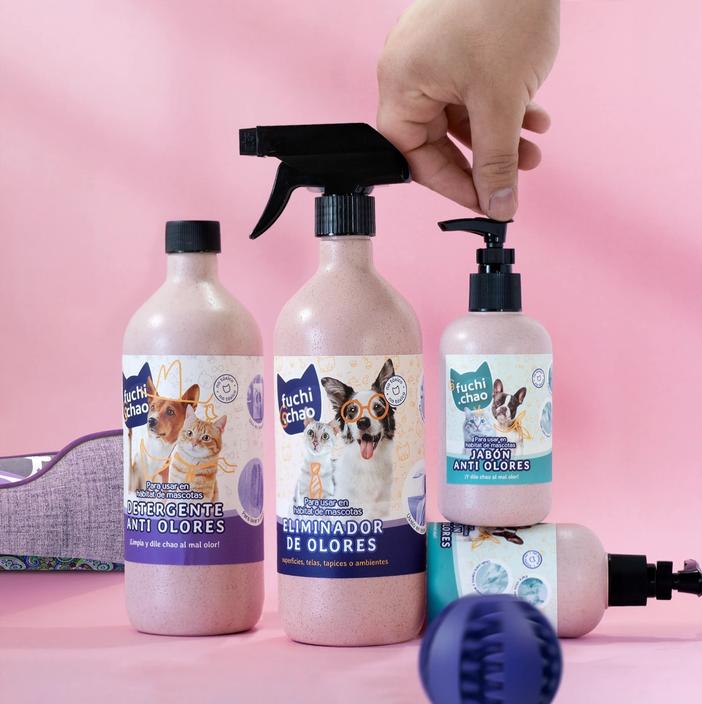

Fuchi Chao
De una fórmula industrial a una marca que los petlovers hacen suya. Naming, identidad y etiquetas en 2021; estrategia de marca en 2023. Hoy está en tiendas veterinarias, plataformas en línea y exposiciones de mascotas.
- Rol
- Naming, identidad, etiquetas y estrategia de marca
- Cliente
- Citrex
- Año
- 2021 y 2023
- Estado
- Marca en el mercado
